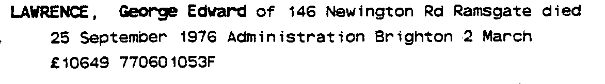
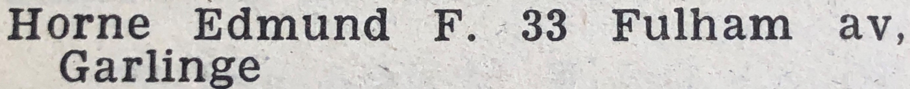
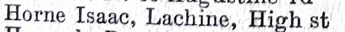
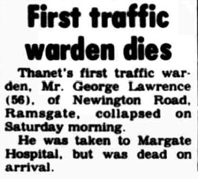
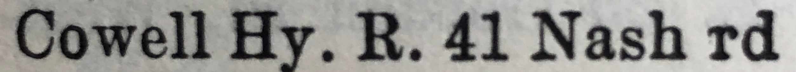
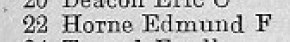
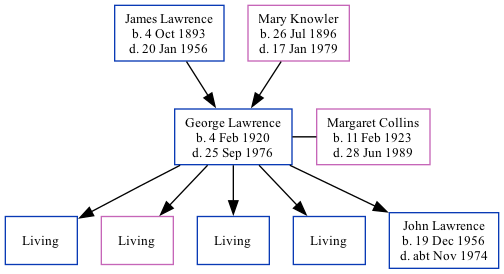

George Edward Lawrence 1920 - 1976
[ Home ] | [ Calendar ] | [ Surnames Index ] | [ Family History ]The son of James Lawrence (a general farm worker) and Mary KnowlerGeorge Lawrence, the first cousin once-removed on the mother's side of Nigel Horne, was born in Haine, Kent, England on Feb 4, 19201,2,3,4, was baptized in St Lawrence, Thanet, Kent, England on Apr 25, 1920 and married Margaret Collins (with whom he had 5 children: Brian George, Valerie Anne, James, Robin and John Edward, along with 4 surviving children) in Thanet, Kent, England around May 19405 (Apr/May/Jun).
George spent all of his life in Kent, England. Throughout his life, he lived in several places around the county: at Meadow Cottages, Marshside on Jun 19, 19211; at 61 Percy Avenue, Kingsgate in 19538, in 19559, in 196310 and in 196511; and at 146 Newington Road, Ramsgate in 19716, in 19747 and in 1976.
He died on Sep 25, 1976 in Ramsgate, Kent, England3.
Parents
- James Thomas was born on Oct 4, 1893
- Mary Elizabeth was born on Jul 26, 1896
Children
- John Edward was born on Dec 19, 1956
Citations
- 1921 Census Of England & Wales - Findmypast (was age 1 and the son of the head of the household)
- England & Wales births 1837-2006 - Findmypast
- England & Wales deaths 1837-2007 - Findmypast
- England & Wales, Birth Index: 1916-2005 Online publication - Provo, UT, USA: The Generations Network, Inc., 2008.Original data - General Register Office. England and Wales Civil Registration Indexes. London, England: General Register Office. © Crown copyright. Published by permission of the Cont
- England & Wales, Marriage Index: 1916-2005 Online publication - Provo, UT, USA: The Generations Network, Inc., 2009.Original data - General Register Office. England and Wales Civil Registration Indexes. London, England: General Register Office. © Crown copyright. Published by permission of the Cont
- 1971 Kelly's Thanet Directory
- 1974 Kelly's Thanet Directory
- 1953 Kelly's Thanet Directory
- 1955 Kelly's Thanet Directory
- 1963 Kelly's Thanet Directory
- 1965 Kelly's Thanet Directory
Notes
From Thanet Times 28 September 1976:
"First traffic warden dies
Thanet's first traffic warden, Mr. George Lawrence (56) of Newington Road, Ramsgate, collapsed on Saturday morning.
He was taken to Margate Hospital, but was dead on arrival.".
Media
George Lawrence - probate

1971 Kelly's Thanet Directory

1974 Kelly's Thanet Directory

1965 Kelly's Thanet Directory
1963 Kelly's Thanet Directory

Thanet Times - 28 Sep 1976

1953 Kelly's Thanet Directory

1955 Kelly's Thanet Directory

England & Wales births 1837-2006 - BMD/B/1920/1/AO/001103/081
England & Wales marriages 1837-2008 - BMD/M/1940/2/AZ/000973/031
England & Wales deaths 1837-2007 - BMD/D/1976/4/AZ/000677/048
Family Tree
Generated by ged2site. Last updated on Nov 13, 2024